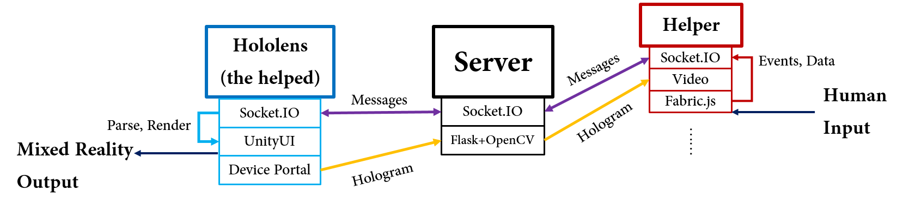

In the modern society, collaboration is becoming more and more important. Collaborations among people with different views of problems are believed to be helpful in brainstorming and problem solving. However, it’s not easy to realize ideal collaborations because collaborators are usually from different organizations and places, which means it’s difficult to assemble them to a place for discussion. Although the development of communication tools like Skype enable people to have real-time remote discussion through the internet, it’s still not enough for collaborations which require delicate instructions like notating one side’s item from the other side. Nowadays, the development of augmented reality techniques provide approaches to more thorough collaborations. And Hololens is one of the most powerful devices accessing to augmented reality. In this project, we implement a remote collaboration system which can share view streaming from Hololens to a laptop and enable markers from the laptop to be shown in Hololens’ view. This system will benefit remote collaborations requiring hand-in-hand instructions.

We develop a server as a hub by WebSocket, forwarding video stream from the HMD and instructions from the helper. A helper monitors the view from the helped and gives instructions on a website. The helped receives the forwarded instruction packages which will be re-rendered by Unity. Therefore, our system is extendable to provide many-to-many services if applicable.